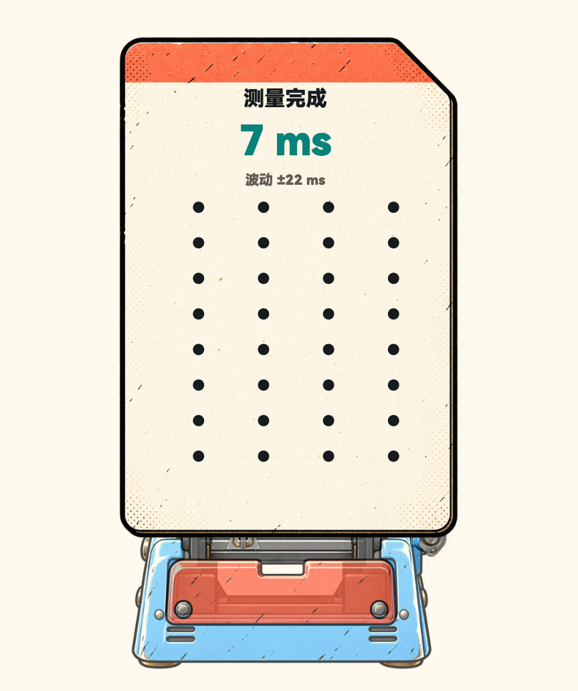

<!doctype html>
<html lang="zh-CN">
<meta charset="utf-8">
<meta name="viewport" content="width=device-width,initial-scale=1">
<title>同拍 · Pura X 结果页保存优先方案</title>
<style>
@font-face{font-family:OneBeatHarmony;src:url('file:///Applications/DevEco-Studio.app/Contents/sdk/default/hms/previewer/resources/fonts/HarmonyOS_Sans_SC.ttf');font-weight:40 900;font-display:block}
:root{--paper:#fff9ee;--ink:#171b1f;--coral:#ff7056;--teal:#29b5ae;--muted:#625b53;--scene-width:288px;--scene-height:344px;--save-gap:12px;--section-gap:16px}
*{box-sizing:border-box}html,body{margin:0;background:var(--paper);color:var(--ink);font-family:OneBeatHarmony,'PingFang SC',sans-serif}button{font:inherit;color:inherit;cursor:pointer}button:focus-visible{outline:3px solid var(--teal);outline-offset:3px}
.screen{width:440px;height:706.666667px;position:relative;overflow:hidden;background:var(--paper)}
.statusbar{height:36px;padding:8px 18px 0;display:flex;align-items:center;justify-content:space-between;font-size:15px;font-weight:800}.system{display:flex;align-items:center;gap:5px;font-size:12px}.battery{border:1px solid #7a766f;border-radius:3px;padding:0 5px;background:#a49f94;color:var(--paper);line-height:15px;font-size:11px}.signal{display:flex;align-items:flex-end;gap:2px;height:12px}.signal i{width:3px;background:var(--ink);border-radius:1px}.signal i:nth-child(1){height:4px}.signal i:nth-child(2){height:7px}.signal i:nth-child(3){height:10px}.signal i:nth-child(4){height:13px}
.page-header{height:65px;display:flex;align-items:center;gap:8px;padding:7px 18px 7px}.back{width:32px;height:44px;background:none;border:0;padding:0;font-size:37px;font-weight:900;line-height:40px;text-align:left}.heading{flex:1;min-width:0}.heading h1{margin:0;font-size:24px;font-weight:900;line-height:30px;transform:skew(-9deg);transform-origin:left center;white-space:nowrap}.heading p{font-size:10px;font-weight:700;color:var(--muted);margin:2px 0 0;letter-spacing:.2px}.bluetooth{padding:4px 8px;border:1px solid var(--ink);border-radius:5px;font-size:10px;font-weight:900;background:var(--teal);box-shadow:1px 1px 0 var(--ink)}
.content{padding:0 18px 40px}.result-art{width:var(--scene-width);height:var(--scene-height);display:block;object-fit:contain;margin:0 auto}.result-state{height:22px;display:flex;align-items:center;justify-content:center;gap:8px;margin:3px 0 0;font-size:13px;font-weight:900}.stability{color:#08827b}.state-dot{color:#b2a99b;font-weight:500}.pending{color:#8d4a35;font-size:12px;font-weight:700}
.save{display:flex;align-items:center;justify-content:center;gap:9px;width:100%;height:54px;margin-top:var(--save-gap);border:1.5px solid var(--ink);border-radius:7px;box-shadow:2px 3px 0 var(--ink);background:var(--coral);font-size:19px;font-weight:900}.save:active{transform:translate(1px,1px);box-shadow:1px 2px 0 var(--ink)}.save .arrow{position:absolute;right:35px;font-size:25px;font-weight:500}
.listen-section{margin-top:var(--section-gap)}.listen-row{display:flex;gap:9px}.listen{flex:1;height:44px;border:1.5px solid var(--ink);border-radius:7px;background:#fffdf8;font-size:13px;font-weight:900;box-shadow:1px 2px 0 #171b1f22}.listen.after{background:var(--teal)}.listen[aria-pressed=true]{box-shadow:inset 0 0 0 2px var(--ink)}.listen-hint{display:flex;align-items:center;gap:9px;margin:10px 0 0;font-size:11px;font-weight:700;color:var(--muted);min-height:20px}.pulse{width:17px;height:17px;border-radius:50%;background:#e5d9c7;border:1.2px solid var(--ink);flex:none}.pulse.active{background:var(--coral)}
.secondary{display:flex;align-items:center;justify-content:space-between;margin-top:10px;border-top:1px solid #ded6c8;padding-top:7px;gap:12px}.quiet{background:none;border:0;padding:8px 0;font-size:12px;font-weight:700;min-height:32px}.detail-copy{font-size:11px;line-height:18px;color:var(--muted);margin:8px 0 0}.home-area{position:absolute;bottom:0;left:0;right:0;height:23px;background:var(--paper);display:flex;align-items:center;justify-content:center;pointer-events:none}.home-line{width:120px;height:5px;border-radius:8px;background:#e0dacd}
.toast{position:absolute;left:50%;bottom:40px;transform:translateX(-50%);padding:10px 18px;border:1px solid var(--ink);border-radius:7px;box-shadow:2px 3px 0 var(--ink);background:var(--paper);font-size:13px;font-weight:700;white-space:nowrap}.toast[hidden]{display:none}
</style>
<main class="screen" id="preview" aria-label="Pura X 耳机校准结果页设计预览">
  <div class="statusbar"><span>17:23</span><div class="system"><span>ᛒ</span><span>◖◗</span><span>5A</span><span class="signal"><i></i><i></i><i></i><i></i></span><span class="battery">8</span><span>ϟ</span></div></div>
  <header class="page-header"><button class="back" aria-label="返回">‹</button><div class="heading"><h1>耳机延迟测量</h1><p>整张时间卡 · 120 BPM · 4/4</p></div><span class="bluetooth">蓝牙</span></header>
  <section class="content">
    
    <div class="result-state"><span class="stability">稳定度良好</span><span class="state-dot">·</span><span class="pending" id="save-state">待保存</span></div>
    <button class="save" id="save-button"><span>保存并生效</span><span class="arrow" aria-hidden="true">›</span></button>
    <div class="listen-section">
      <div class="listen-row"><button class="listen" data-listen="校准前" aria-pressed="false">校准前试听</button><button class="listen after" data-listen="校准后" aria-pressed="false">校准后试听</button></div>
      <p class="listen-hint"><span class="pulse" aria-hidden="true"></span><span id="listen-hint">试听时，对比声音与亮灯是否同步</span></p>
    </div>
    <div class="secondary"><button class="quiet" id="details" aria-expanded="false">测量说明 ∨</button><button class="quiet" id="retry">重新测量 ›</button></div>
    <p class="detail-copy" id="details-copy" hidden>这个数值包含耳机播放链路和跟拍触摸差值，保存后作为本机播放补偿。更换或重新连接耳机后，可重新测量。</p>
  </section>
  <div class="home-area" aria-hidden="true"><div class="home-line"></div></div>
  <div class="toast" id="toast" role="status" hidden></div>
</main>
<script>
const toast=document.getElementById('toast');let noticeTimer;
function notice(text){toast.textContent=text;toast.hidden=false;clearTimeout(noticeTimer);noticeTimer=setTimeout(()=>{toast.hidden=true;},1800);}
document.getElementById('save-button').onclick=()=>notice('设计预览：保存并生效');
document.getElementById('retry').onclick=()=>notice('设计预览：重新测量');
document.getElementById('details').onclick=event=>{const copy=document.getElementById('details-copy');copy.hidden=!copy.hidden;event.currentTarget.setAttribute('aria-expanded',String(!copy.hidden));event.currentTarget.textContent=copy.hidden?'测量说明 ∨':'收起说明 ∧';};
for(const button of document.querySelectorAll('[data-listen]'))button.onclick=()=>{for(const b of document.querySelectorAll('[data-listen]'))b.setAttribute('aria-pressed',String(b===button));document.getElementById('listen-hint').textContent=`${button.dataset.listen}试听中`;document.querySelector('.pulse').classList.add('active');};
</script>
</html>
